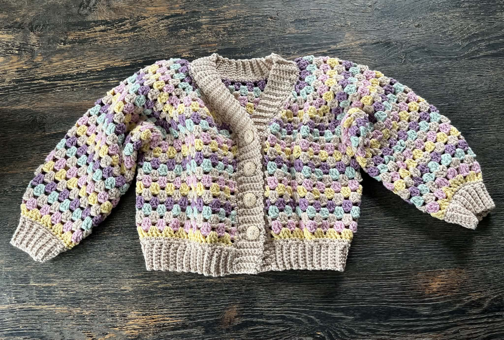
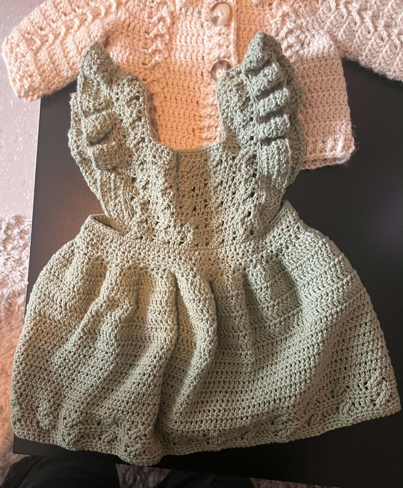
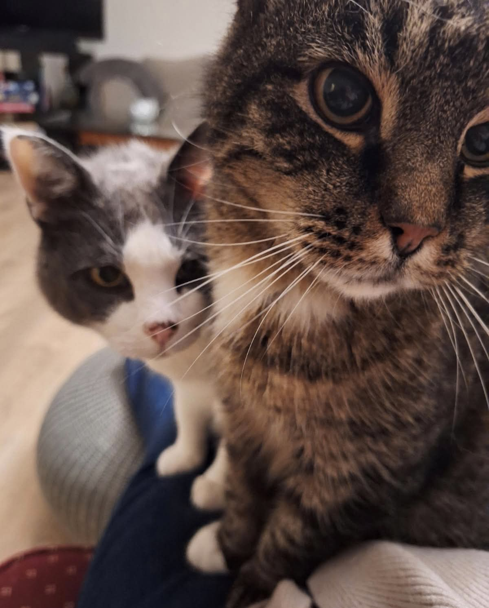
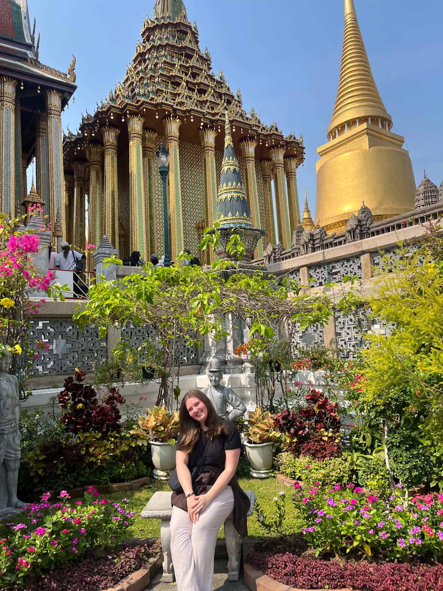

I read mysteries the way other people read gossip magazines: obsessively, mostly for the reveal. There's something deeply satisfying about being handed a pile of scattered clues and having to work out how they fit together. Turns out that's a pretty accurate description of why I love cybersecurity too. Whether it's tracing a privilege-escalation path through Entra ID or figuring out what a suspicious DLL is actually trying to do, it's the same instinct: collect the pieces, find the pattern, solve the puzzle.
I didn't start out here, though. I spent two years of a three-year Bachelor's in electrical engineering before admitting to myself that the spark just wasn't there. Everyone around me seemed genuinely fired up about the material, and I kept waiting to feel the same way; it never really came. Switching felt risky at the time (I'd already put in two years, after all), but staying somewhere comfortable just because I'd already invested in it felt like the worse trade.

I originally applied for computer science, mostly because I understood what that degree actually involved and "communication technology" sounded vague to me. I put it down as my backup, almost as an afterthought. I got into the backup instead, and it turned out to be exactly where I needed to land. The more I've learned since (cryptography, blue team, red team, all of it), the more convinced I am that I found my thing.
Outside of security, I crochet. I've been at it for four to five years now, mostly baby garments and small projects, and I've gotten genuinely good at it.

I also climb (bouldering, three to four years in), and I travel as much as I can, mostly for the food: trying whatever's local wherever I end up, then coming home to experiment with recreating it in my own kitchen. That's actually part of why I worked as a cook for a couple of years. I just like being around food.

Right now I'm a cybersecurity master's student at NTNU, about to spend an exchange year at EURECOM in France, and always looking for the next thing to break, fix, or figure out.
